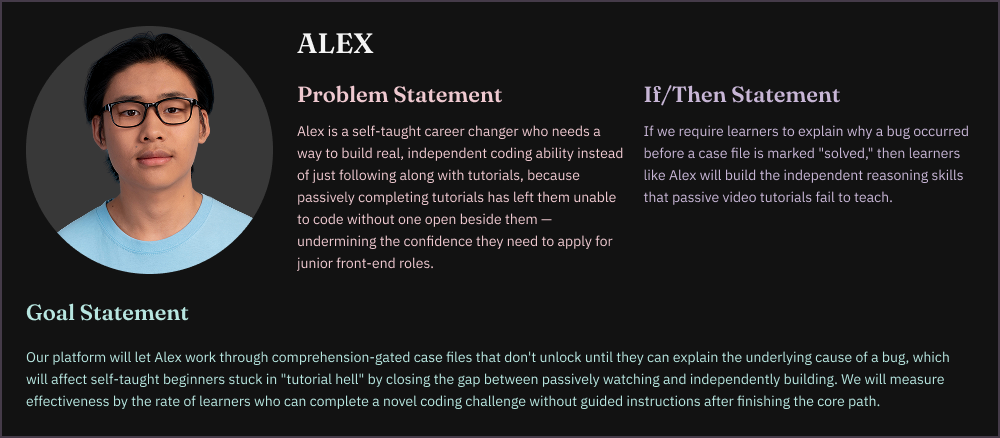
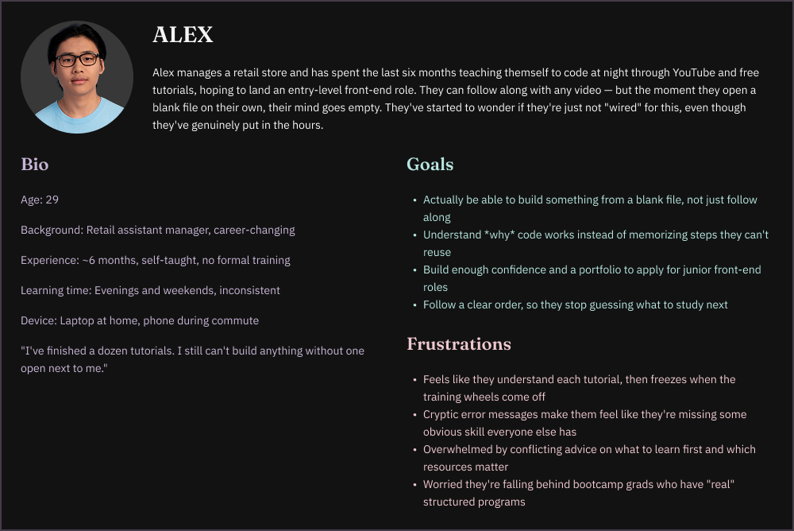
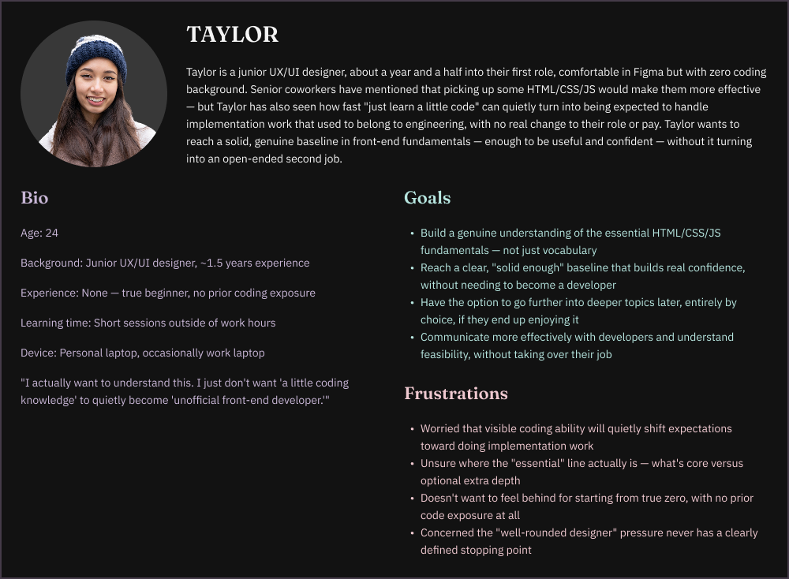
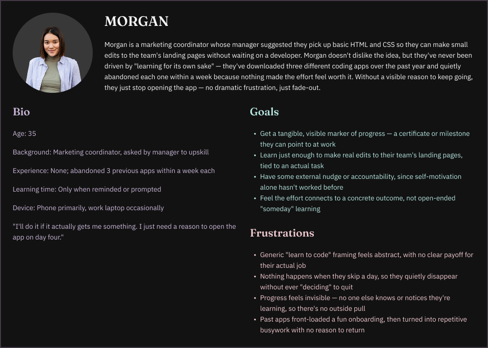
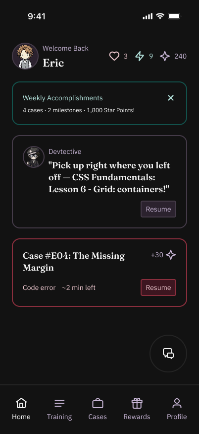
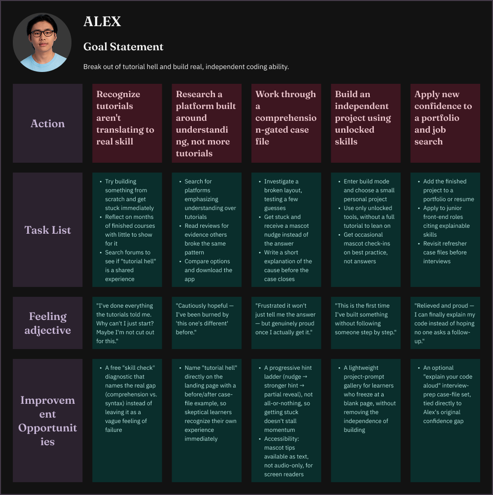
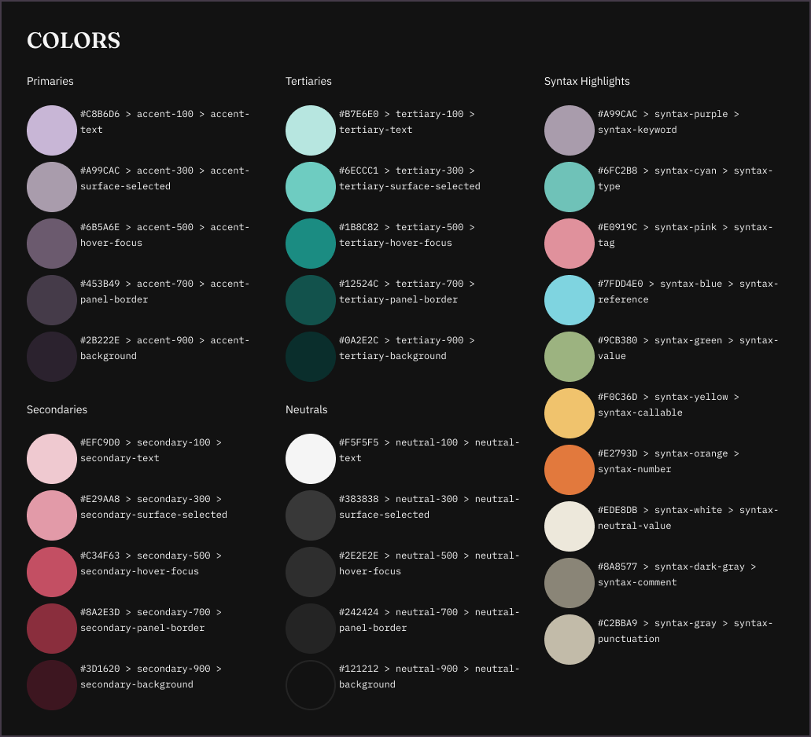
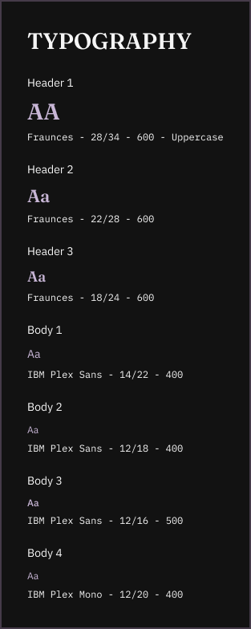

DevTective
DevTective is a gamified coding education app and website that helps learners build real HTML, CSS, and JavaScript skills by treating every bug as a case to investigate and solve. The concept responds to a familiar outcome: 5–15% of people who start a free coding course never finish it.
Momentum, not motivation
Most dropout analysis treats this as a motivation problem. Interviewing early-stage coders surfaced a more fixable gap: people didn't quit because they stopped caring, they quit after a few days away left them unsure where they'd left off.

Three learners
Three personas, from a career changer to a junior designer to a marketer, frame who the concept is for and where each one stalls.



Designing for re-entry


The screens
The rest of the concept in high fidelity: case files, build mode, and rewards.
A small design system
Color tokens and a typographic scale keep every screen consistent.


A concept built to test
As a certificate capstone, the deliverable is the research-to-wireframe process itself: a documented problem statement, a re-entry-first information architecture, and hi-fi wireframes ready for usability testing, the same workflow I'm now applying on internship work.